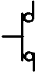
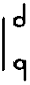
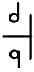
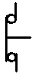
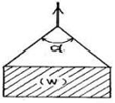
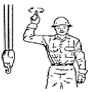
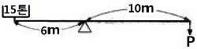

천장크레인운전기능사 (2007-01-28 기출문제)
1과목: 임의 구분
1. 크레인에서 정규 부하 시험 중 권하 속도의 허용 범위는?
- ＋10 ~ -5%
- ＋25 ~ -5%
- ＋30 ~ -10%
- ＋30 ~ -20%
(정답률: 43%)

2. 크레인에서 사용하는 과부하 방지장치의 안전점검 사항 중 틀린 것은?
- 과부하 방지장치가 동작할 때는 경보음이 작동되어야 한다.
- 관계책임자 이외는 임의로 조정할 수 없도록 납봉인 등이 되어 있어야 한다.
- 과부하 방지장치의 동작 시 일정한 시간이 지나면 자동 복귀되어야 한다.
- 과부하 방지장치는 성능검정을 필 한 것이어야 한다.
(정답률: 79%)
3. “60 / 20 × 42M”이 가리키는 의미는?
- 주권이 20 ton, 보권이 60ton, 스팬이 42m
- 주권이 60 ton, 보권이 20ton, 스팬이 42m
- 주권이 60 ton, 보권이 20ton, 양정이 42m
- 주권이 20 ton, 보권이 60ton, 양정이 42m
(정답률: 78%)
4. 중추형 권과방지장치의 특징과 거리가 먼 것은?
- 매달린 중추의 위치에서 동작하므로 동작위치의 오차가 적다.
- 동작 후의 복귀거리가 짧다.
- 권상드럼의 회전수와 관련이 있어 와이어로프 교환 시 위치를 조정할 필요가 있다.
- 권상위치 제한은 가능하나, 권하위치의 제한은 불가능하다.
(정답률: 56%)
5. 천장크레인의 3대 주요 구성장치가 아닌 것은?
- 권상장치
- 횡행장치
- 주행장치
- 신호장치
(정답률: 91%)
6. 어떤 천장크레인의 시험하중이 110톤일 때 이 크레인으로 작업할 수 있는 하중의 범위는?
- 100톤 이하
- 120톤 이하
- 125톤 이하
- 175톤 이하
(정답률: 78%)
7. 완충장치(BUFFER)의 종류로서 알맞지 않은 것은?
- 유압 BUFFER
- 고무 BUFFER
- 강철 BUFFER
- 스프링 BUFFER
(정답률: 87%)
8. 직류 전동기에 이용되는 속도 제어용 브레이크는?
- 다이나믹 브레이크
- 메카니컬 브레이크
- 마그네틱 브레이크
- 유압압상 브레이크
(정답률: 59%)
9. 천장크레인의 스팬에 대한 설명으로 옳은 것은?
- 주행레일 양쪽 중심 간의 거리
- 횡행차륜 양쪽 중심 간의 거리
- 거더의 양쪽 끝단까지의 거리
- 거더 양쪽 중심 간의 거리
(정답률: 62%)
10. 차륜플랜지 두께의 마모한계는 원래 치수의 몇 % 인가?
- 20
- 30
- 40
- 50
(정답률: 50%)
11. 천장크레인에서 레일 측면의 마모는 원래 규격 치수의 얼마 이내이어야 하는가?
- 5% 이내
- 10% 이내
- 15% 이내
- 20% 이내
(정답률: 53%)
12. 차륜 플랜지의 한쪽만 계속 레일과 접촉하여 마모되는 원인이 아닌 것은?
- 레일과 차륜의 직각도 불량
- 구동차륜과 종동차륜의 지름이 틀림
- 좌우 주행레일의 높이가 틀림
- 좌우 구동차륜의 지름 차가 큼
(정답률: 53%)
13. 천장크레인에서 주행 기계장치 브레이크 라이닝의 허용 마모량은 얼마인가?
- 원형의 15% 이내
- 원형의 30% 이내
- 원형의 50% 이내
- 원형의 75% 이내
(정답률: 64%)
14. 전자 브레이크의 전자석 부분 과열 원인 중 틀린 것은?
- 철심이 완전히 흡착하지 않음
- 전원 전압의 강하
- 권선의 부분단락
- 브레이크 슈(shoe)의 마모
(정답률: 54%)
15. 훅(Hook)의 마모는 와이어로프가 걸리는 곳에 흠이 생기는 것인데 마모의 깊이가 몇 ㎜가 되면 평활하게 다듬질해야 하는가?
- 0.5㎜
- 2㎜
- 5㎜
- 8㎜
(정답률: 62%)
16. 이퀄라이저 도르래의 점검에 대하여 기술한 것으로 틀린 것은?
- 로프 홈의 마모
- 이퀄라이저 도르래의 회전상태
- 이퀄라이저 도르래의 축방향 이동
- 포르와의 접촉각
(정답률: 50%)
17. 브레이크 중에서 권상장치의 제동용으로 적합하지 않는 것은?
- 메카니칼 브레이크
- 압상기 브레이크
- 직류전자 브레이크
- 교류전자 브레이크
(정답률: 57%)
18. 거더의 캠버는 정격하중을 가하였을 때 스팬의 얼마 이하가 적당한가?
- 1/800
- 1/600
- 1/500
- 1/400
(정답률: 81%)
19. 훅에 대한 설명으로 틀린 것은?
- 훅에 사용하는 재료는 기계구조용 탄소강을 쓴다.
- 매다는 하중이 50톤 이상인 것에서는 양쪽 현수훅이 사용된다.
- 훅의 안전계수는 5 이상 이다.
- 훅에 와이어로프가 걸리는 부분의 마모자국 깊이는 7%가 되면 교환하여야 한다.
(정답률: 50%)
20. 천장크레인에서 와이어로프가 드럼에 감길 때 홈이 없는 경우 플리트(fleet) 각도는 얼마가 좋은가?
- 2° 이내
- 4° 이내
- 15° 이내
- 30° 이내
(정답률: 62%)
2과목: 임의 구분
21. 전 중 전동기에 전원이 인가되지 않아 정지되었을 때 가장 먼저 점검하여야 할 것은?
- 과부하 계전기 동작 유무 확인
- 집전기 이탈 상태 확인
- 배선상태 확인
- 브레이크 동작 상태 확인
(정답률: 65%)
22. 베어링 호칭번호 6204의 안지름은 얼마인가?
- 20㎜
- 23㎜
- 40㎜
- 104㎜
(정답률: 37%)
23. 다음 설명 중 틀린 것은?
- 천장크레인의 권상장치는 예방 보전해야 한다.
- 천장크레인의 주행장치는 사후 보전으로 해도 무방하다.
- 천장크레인의 권상장치는 사후 보전으로 해도 무방하다.
- 예방 보전이라 함은 고장이 일어날 것 같은 부분을 계획적으로 교환, 수리하는 방법이다.
(정답률: 70%)
24. 횡행 모터 축에 가장 많이 쓰이는 커플링은?
- 머프 커플링(muff coupling)
- 플렉시블 커플링(flexible coupling)
- 유니버셜 커플링(universal coupling)
- 플랜지 커플링(flange coupling)
(정답률: 42%)
25. 플랜지형 플렉시블 커플링에는 무엇으로 체결되어 있는가?
- 아이 볼트
- 핀
- 리머 볼트
- 성크키
(정답률: 27%)
26. 동력의 단위 중 1마력(PS)은?
- 70kgf·m
- 102kgf·s/m
- 102kgf·m/s
- 75kgf·m/s
(정답률: 84%)
27. 기어의 손상 중 잇면으로부터 일부 금속편이 떨어지는 경우, 그 원인으로 가장 적당한 것은?
- 과하중 또는 중심선의 불일치
- 윤활유의 부적당
- 윤활유량 과다
- 기어의 회전속도가 느릴 때
(정답률: 70%)
28. 전압에는 저압, 고압, 특별고압 3가지 종류가 있다. 특별 고압은 몇 V를 초과하는 것을 말하는가?
- 220
- 700
- 1000
- 7000
(정답률: 42%)
29. 입력 전압이 440V, 60(Hz)인 3상 유도정동기가 있다. 극수가 4극이고 슬립이 3%일 때 회전자 속도는 약 얼마인가?
- 1746rpm
- 1780rpm
- 1800rpm
- 1880rpm
(정답률: 48%)
30. 점검항목 중 년간 점검에 해당하는 것은?
- 주행, 횡행 레일을 측정기 사용 점검
- 훅의 작동상태
- 전기 배선의 누전 및 오염 상태
- 와이어 드럼의 이상 마모 상태
(정답률: 36%)
31. 치차, 차륜 등과 같이 회전체를 축에 고정할 때 보통 사용하는 것은?
- 나사
- 베어링
- 브레이크
- 키이
(정답률: 72%)
32. 천장크레인에서 리모콘 크레인의 취급에 대하여 설명한 것으로 틀린 것은?
- 걸어가면서 운전하는 경우는 안전 통로를 이용한다.
- 화장실 용무 등 운전을 일시 정지할 경우는 제어기의 전원스위치를 끈다.
- 리모콘 크레인은 운전 시작 전 제어기의 제어방향과 당해 크레인의 작동방향과의 일치여부는 확인할 필요가 없다.
- 휴식 시나 작업종료 시 크레인 작업을 종료할 때에는 제어기에서 키이를 빼어 소정의 장소에 보관한다.
(정답률: 80%)
33. 다음 기호 중 수동 조작 자동복귀형 b접점 스위치는?




(정답률: 60%)
34. 수전반 또는 보호반 내에 설치된 직접적인 안전장치는?
- 주 전자접촉기
- 주 나이프 스위치
- 누름 단추스위치
- 표시등
(정답률: 40%)
35. 크레인의 감전 사고를 방지하기 위한 장치를 기술한 것으로 관계없는 것은?
- 접지
- 누전 차단기
- 메인 라인 스위치
- 3상 4선식 주행집전장치
(정답률: 50%)
36. 마그넷 크레인(magnet crane)에 있어서 최소 정전보증시간은?
- 10분 이상
- 20분 이상
- 40분 이상
- 50분 이상
(정답률: 48%)
37. 크레인 운전 시의 기본적인 주의 사항으로 틀린 것은?
- 화물을 권상한 채로 운전석을 이탈하지 않는다.
- 신호자와 공동 작업을 할 때는 줄걸이 작업 불량이나 신호불량을 확인한 경우에도 신호에 따라서 운전한다.
- 크레인을 사용하여 작업자를 운반하거나 또는 작업자를 권상한 채 작업해서는 안 된다.
- 크레인 운전사 자신이 권상화물 위에 타거나 권상화물 위에서 작업해서는 안 된다.
(정답률: 64%)
38. 운전자 안전수칙을 설명한 것 중 틀린 것은?
- 운반물이 흔들리거나 회전하는 상태로 운반해서는 안 된다.
- 운반물은 작업자 상부로 운반할 수 없으며, 직각운전을 원칙으로 한다.
- 운전석을 이석할 때는 크레인을 정지위치로 이동시킨 후 훅을 최대한 내려놓는다.
- 옥외 크레인은 강풍이 불어올 경우 운전 및 옥외 점검, 정비를 제한한다.
(정답률: 53%)
39. 주의를 요하는 곳에 도색하는 표시색은?
- 회색
- 녹색
- 노란색
- 갈색
(정답률: 74%)
40. 감속기의 기어에 급유하는 목적이 아닌 것은?
- 소음방지
- 냉각작용
- 치면에 완전한 유막 형성
- 미끄럼 방지
(정답률: 66%)
3과목: 임의 구분
41. 와이어로프에 관한 설명 중 틀린 것은?
- 랭 꼬임은 소선의 경사가 완만하여 외부와의 접촉면이 길다.
- 보통 꼬임은 스트랜드와 와이어로프의 꼬임 방향이 서로 반대이다.
- 보통 꼬임은 외부와 접촉 면적이 작아서 마모는 크지만 킹크 발생이 적고 취급이 용이하다.
- 랭 꼬임은 보통 꼬임에 비해서 손상도가 심해 장시간의 사용에 불리하다.
(정답률: 59%)
42. 와이어로프의 끝을 절단하여 드럼에 장착시키고자 할 때 시징의 길이는?
- 와이어로프 직경의 3배
- 와이어로프 직경과 동일하게
- 와이어로프 직경의 20배
- 드럼 직경의 1.5배
(정답률: 34%)
43. 와이어로프의 내·외부 마모방지 방법이 아닌 것은?
- 도유를 충분히 할 것
- 장애물로 두드리거나 비비지 않도록 할 것
- S 꼬임을 피할 것
- 드럼에 와이어로프를 감는 방법을 바르게 할 것
(정답률: 55%)
44. 크레인의 와이어로프를 교환하여야 된다고 판단되는 것은?
- 1년간 사용하였을 때
- 소선수가 10% 이상 절단되거나, 직경이 공칭경의 7%이상 감소되었을 때
- 외관상 매우 지저분할 때
- 와이어로프에 기름이 많이 묻었을 때
(정답률: 85%)
45. 크레인 작업에 설명 중 틀린 것은?
- 가벼운 짐이라도 외줄로 매달아서는 안 된다.
- 구멍이 없는 둥근 것을 매달 때는 로프를 ＋자 무늬로 한다.
- 두 대의 기중기로 작업을 할 때 지휘자는 절대 한 사람이어야 하며, 신호수는 기중기 한대에 1명씩 필요하다.
- 운전자는 줄걸이 상태가 좋지 않다고 생각될 때 그 작업을 하지 않아야 한다.
(정답률: 53%)
46. 와이어로프 안전율 계산 공식을 바르게 설명한 것은? (단, Pw : 정격하중＋훅 중량(톤), η : 시브효율)
- S = 절단하중(톤) / (Pw/와이어로프줄수) × η
- S = 절단하중(톤) / (와이어로프줄수/Pw) × η
- S = (Pw/와이어로프줄수) / 절단하중(톤) × η
- S = 절단하중(톤) / 와이어로프줄수 × η
(정답률: 31%)
47. 그림과 같이 줄걸이 용구를 선정하여 줄걸이 할 경우 줄걸이 로프에 가장 작은 하중이 걸리는 각도는?

- 45˚ 이내
- 65˚ 이내
- 90˚ 이내
- 120˚ 이내
(정답률: 54%)
48. 줄걸이 방법의 설명 중 틀린 것은?
- 눈걸이 : 모든 줄걸이 작업은 눈걸이를 원칙으로 한다.
- 반걸이 : 미끄러지기 쉬우므로 엄금한다.
- 짝감기 걸이 : 가는 와이어로프일 때 사용하는 줄걸이 방법이다.
- 어깨걸이 나머지 돌림 : 2가닥 걸이로서 꺾어 돌림을 할 수 없을 때 사용하는 줄걸이 방법이다
(정답률: 32%)
49. 다음 그림은 작업자가 크레인 운전자에게 어떻게 운전하라는 수신호인가?

- 훅을 돌린다.
- 훅을 올린다.
- 훅을 내린다.
- 훅을 정지시킨다.
(정답률: 67%)
50. 그림에서 P점에 몇 톤을 가해야 균형이 잡히겠는가?

- 9
- 8
- 7
- 25
(정답률: 74%)
51. 위험한 작업을 할 때 작업자에게 필요한 조치로 가장 적절한 것은?
- 작업이 끝난 후 즉시 알려 주어야 한다.
- 공청회를 통해 알려 주어야 한다.
- 미리 작업자에게 이를 알려 주어야 한다.
- 작업하고 있을 때 작업자에게 알려 주어야 한다.
(정답률: 67%)
52. 작업자가 작업을 할 때 반드시 알아 두어야 할 사항이 아닌 것은?
- 안전 수칙
- 작업량
- 기계, 기구의 사용법
- 경영 관리
(정답률: 86%)
53. 화재의 분류에서 전기 화재에 해당되는 것은?
- A급 화재
- B급 화재
- C급 화재
- D급 화재
(정답률: 62%)
54. 인력으로 운반 작업을 할 때 틀린 것은?
- 드럼통과 LPG 봄베는 굴려서 운반한다.
- 공동 운반에서는 서로 협조를 하여 작업한다.
- 긴 물건은 앞쪽을 위로 올린다.
- 무리한 몸가짐으로 물건을 들지 않는다.
(정답률: 53%)
55. 안전 측면에서 고려해야 할 사항으로 모래, 쇳가루 등이 옷에 묻어있는 경우 안전하게 털어내는 방법과 가장 거리가 먼 것은?
- 작업복을 벗어서 털어낸다.
- 솔로 털어낸다.
- 털이개를 이용하여 털어낸다.
- 작업복을 입은 채 압축 공기를 이용하여 완전하게 털어낸다.
(정답률: 58%)
56. 가스 용접의 안전 작업으로 적합하지 않은 것은?
- 산소누설 시험은 비눗물을 사용한다.
- 토치 끝으로 용접물의 위치를 바꾸거나 재를 제거하면 안 된다.
- 토치에 점화할 때에는 성냥불과 담뱃불로 사용하여도 된다.
- 산소 봄베와 아세틸렌 봄베 가까이에서 불꽃 조정을 피해야 한다.
(정답률: 93%)
57. 해머 작업 시 틀린 것은?
- 장갑을 끼지 않는다.
- 작업에 알맞은 무게의 해머를 사용한다.
- 해머는 처음부터 힘차게 때린다.
- 자루가 단단한 것을 사용한다.
(정답률: 86%)
58. 보호구의 구비조건으로 가장 거리가 먼 것은?
- 착용이 복잡할 것
- 유해 위험요소에 대한 방호 성능이 충분할 것
- 재료의 품질이 우수할 것
- 외관상 보기가 좋을 것
(정답률: 40%)
59. 산소결핍의 우려가 있는 장소에서 사용하는 마스크는?
- 방독 마스크
- 방진 마스크
- 가스 마스크
- 송기 마스크
(정답률: 84%)
60. 볼트나 너트를 죄거나 푸는데 사용하는 각종 렌치(Wrench)에 대한 설명으로 틀린 것은?
- 조정 렌치： 멍키 렌치라고도 호칭하며, 제한된 범위 내에서 어떠한 규격의 볼트나 너트에도 사용할 수 있다.
- 엘 렌치： 6각형 봉을 “L"자 모양으로 구부려서 만든 렌치이다.
- 박스 렌치： 연료 파이프 피팅 작업에 사용한다.
- 소켓 렌치： 다양한 크기의 소켓을 바꾸어가며 작업할 수 있도록 만든 렌치이다.
(정답률: 66%)
정규 부하 시험 중 권하 속도의 허용 범위는 ＋25 ~ -5%입니다. 이는 권하 속도가 정해진 범위 내에서 일정하게 유지되어야 함을 의미합니다.
＋25%는 권하 속도가 최대 25% 빠르게 움직일 수 있음을 나타내며, -5%는 권하 속도가 최대 5% 느리게 움직일 수 있음을 나타냅니다. 이 범위를 벗어나면 크레인의 안전성과 작업 효율성에 영향을 미칠 수 있기 때문에 엄격하게 제한되어 있습니다.
따라서, 정규 부하 시험 중 권하 속도의 허용 범위는 ＋25 ~ -5%입니다.